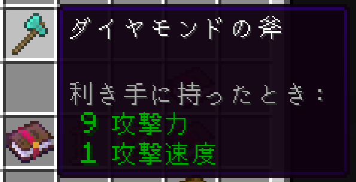

装備スロット
頭・胸・脚・足・Body・手・オフハンドから装備位置を選択。
MINECRAFT PAPER PLUGIN · RELEASE 1.2.0
OP権限がなくても、自分のアイテムを好きな姿へ。名前や色といった見た目の編集に加え、手持ちのエンチャント本を使った付与と合成まで、プレイヤー自身で扱える編集ツールです。
実際のGUIを選んで眺められるミニギャラリーです。タブを押すと中央の画面が切り替わります。

頭・胸・脚・足・Body・手・オフハンドから装備位置を選択。
性能を変えないエンチャント風の光沢も選べます。
設定ファイルからMODやリソースパックのモデルも登録できます。
Release 1.2.0で利用できる実装済み機能です。画像のない部分は架空の画面を作らず、実装内容を触って理解できるミニデモにしました。
編集したいアイテムを持ってメニューを開きます。
エンチャントが1種類だけ入った本を専用スロットへ。
条件とレベル上限を確認し、成功すると本を1冊消費します。
同じ種類・同じレベルの本を2冊セットしてください。
BOOK COMBINE
同じ種類・同じレベルで、それぞれエンチャントを1種類だけ持つ本を2冊セットすると、1段階上の本へ合成できます。種類やレベルが違う本、上限を超える結果は合成されません。
LEVEL CONTROL
未付与なら本のレベルを採用し、現在より高い本ならそのレベルへ更新、同レベルなら1段階上げます。低い本は適用せず、算出した結果を設定上限と照合します。耐久力は対象アイテムの種類別に上限を扱います。
レベル上限はサーバー設定でエンチャントごとに管理され、設定値が負数の場合は上限なしとして処理されます。変わり得る数値は固定表示していません。
編集前後のツールチップと、装備したときの見え方まで実画像で比較できます。

Paperサーバーへ導入し、編集したいアイテムを持って /simpleEdit を実行。OP権限なしで、見た目編集とエンチャント編集を利用できます。